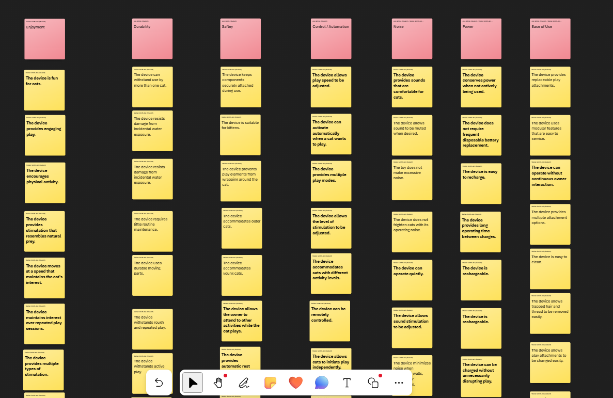
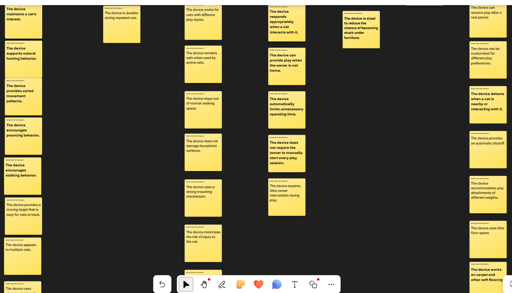
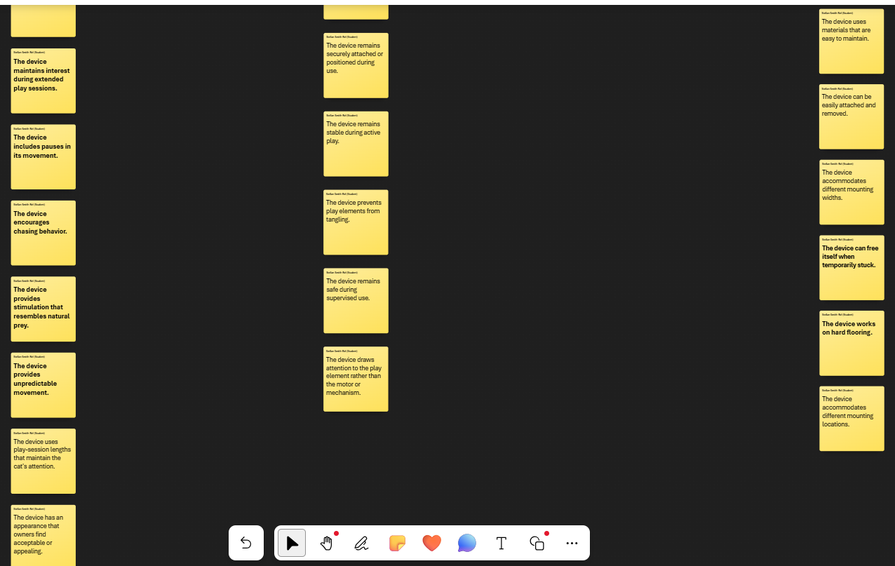
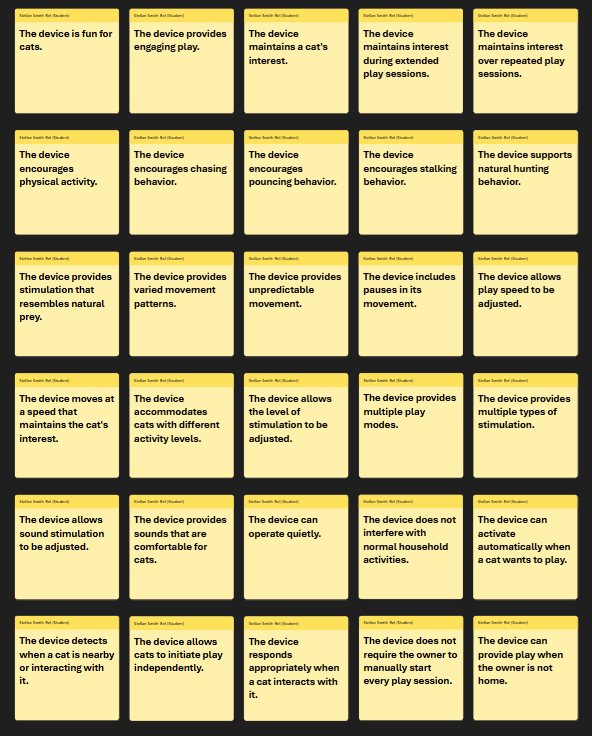
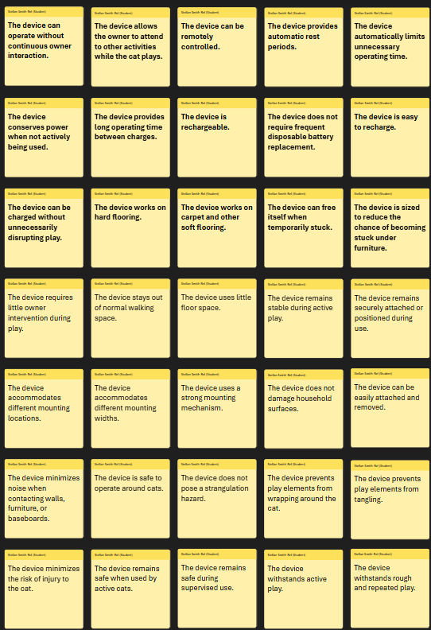
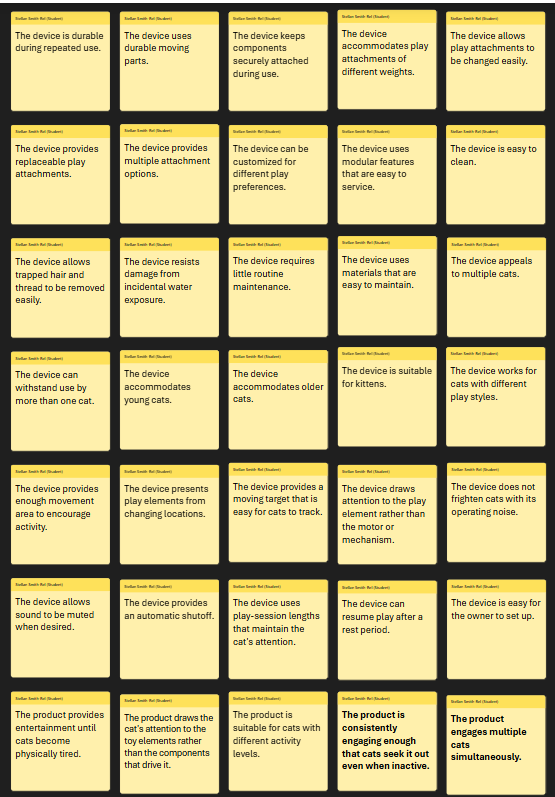

User Needs and Benchmarking
Voice of the Customer Benchmarking
Search #1
Keywords: "automated cat toys"
Selected Products
1. Interactive Cat Toys for Indoor Cats, Clip-On Automatic Flying Bird
{kind=link}
-
Price: $26
-
Vendor: Amazon
-
Description: This interactive, clip-on automatic flying bird cat toy from the brand Aoioploa provides vertical, space-saving entertainment for indoor cats and kittens.
Positive Comments
| Voice of the Customer | Restated Customer Need |
|---|---|
| "This is such a fun interactive toy for indoor cats! The clip-on design is really convenient because I can attach it to a table, shelf, or door frame without taking up any floor space. My cat immediately became interested in the flying bird movement and keeps coming back to play with it. I especially like the automatic play and rest cycles, and it’s surprisingly quiet while running. Being USB rechargeable is also a big plus since I don’t have to keep buying batteries. The interchangeable attachments are great for keeping things interesting. It feels sturdy, is easy to set up, and keeps my cat active and entertained. Definitely a great purchase for indoor cats." | 1. Cats view the toy as fun. (explicit) |
| 2. The toy is out of the way of walking space. (explicit) | |
| 3. The toy is USB rechargeable. (explicit) | |
| 4. The toy is power-conserving. (latent) | |
| "LOVE THIS TOY!! I actually made a similar one out of wire coat hangers a while back but this retractable version is waaaay more engaging for my cat. I wish there was variable speed on the reel so I could set how fast/often it winds the toy up but for what it is, its great. My cat stares at it and waits for the right moment to pounce. He gets extra excited if I manually pull the string away from the door frame and let it swing. Only note is, this is not a toy for your cat to play with unattended. Anything with such a long string can be a risk. But for monitored play, this is great. I was really impressed with the strength of the clasps and how wide they go. My doorframe has moulding around both sides so I was afraid the clamp wouldnt open far enough. I also appreciate the rubber padding so it doesnt damage paint." | 5. The toy provides engaging play. (explicit) |
| 6. The toy allows the cat to pounce. (latent) | |
| 7. The toy has adjustable speed. (latent) | |
| 8. The toy has strong clasps. (explicit) | |
| 9. The clasps accommodate different doorframe widths. (explicit) | |
| 10. The clamps do not damage surfaces. (explicit) | |
| 11. The toy is suitable for monitored play. (explicit) |
Negative Comments
| Voice of the Customer | Restated Customer Need |
|---|---|
| "I got this because my cat is OBSESSED with a bug-like attachment for a fishing pole toy, to the point where she cries when I put it away, even if she's tired and has fallen asleep. I was hoping for an alternative that would allow me to use two hands to, you know. Eat. Or something silly like that. My cat's opinion: she was curious at first, but lost interest quickly. She played with it once when I attached her bug toy, but didn't care about it again-even the next day when she was at her toy box meowing for me to pull her fishing pole out. I don't think the movement sequence was designed by someone who has cats. It moves far too much with no pause in the middle--cats are ambush predators and get interested initially by movement but generally don't engage until the toy is still. 8 minutes on is too long to keep their attention. The motion is also quite repetitive. My opinion: Even if my cat loved it, I would still return it. The motor makes a horrendous high-pitched whine that gave me a headache (although it may be at a frequency that not everyone can hear). Her bug toy is really too light to attach as well--the string gets itself tangled. That wouldn't be a deal breaker if the motor was actually quiet (I could potentially add weight to the string to fix the tangling issue). I would also love if it had a remote so I could turn it off and on from a distance so that I could shut it off when she lost interest (or to turn it on when she's trying to wake me up at 5am to play by biting my phone charger). I did like the clamping feature over any sort of adhesive or permanent attachment. I think it's a great idea in theory but needs a few design tweaks to be functional. And, as others have said, it is 100% not safe to be run without supervision (risk of getting strangled), but that's true of really any cat toy with a long string and I don't see a way to make it safe enough to be played with without me in the same room as her." | 1. The toy maintains the cat's interest. (explicit) |
| 2. The toy uses movement patterns that appeal to cats. (latent) | |
| 3. The toy includes pauses in its movement. (latent) | |
| 4. The toy has varied movement patterns. (explicit) | |
| 5. The toy operates quietly. (explicit) | |
| 6. The toy prevents the string from tangling. (explicit) | |
| 7. The toy can accommodate different attachment weights. (latent) | |
| 8. The toy can be remotely controlled. (explicit) | |
| 9. The toy can be easily attached and removed. (explicit) | |
| 10. The toy is safe to operate around cats. (explicit) | |
| 11. The toy does not pose a strangulation hazard. (latent) | |
| 12. The toy allows the owner to attend to other activities while the cat plays. (latent) | |
| "Beware ⚠️ I was someone who had read all the reviews good and bad but didn't pay attention to the latter because I thought that wouldn't be me. Well last week it was. I have two very active girls and I set this up only when I am present. I was cooking in my kitchen and set it up in my doorway that is directly across so I could see them playing. I noticed that they had stopped playing which they sometimes do and then come back. But this time was different they went quiet for a while and then I started hearing hissing. Long story short one of my girls got it wrapped around her back leg. She is a long haired cat so it was hard to see but it was extremely tight around her leg. Making it hard for her to walk. I am afraid that it did cut off circulation. After a lot of hissing biting and screaming from her, I was able to finally cut it off. She did walk with a limp but as soon as I was going to take her to the vet she started walking normally. All this to say this is not safe at all. Even under supervision the worst can happen. And I would hate to think of what would happen if I wasn't there. She could have lost her leg or worse got wrapped in it more. I was actually getting ready to leave a five-star review because of how much they enjoyed it. But I will never be getting anything like this again. There are other interactive toys that are much safer for active cats. This is not it." | 13. The toy prevents the string from wrapping around the cat. (explicit) |
| 14. The toy does not pose a risk of injury to the cat. (explicit) | |
| 15. The toy remains safe even when used with active cats. (latent) | |
| 16. The toy is safe to use even under supervision. (explicit) |
2. Bispty Interactive Cat Toys for Indoor Cats, Rechargeable Automatic Cat Toy
{kind=link}
-
Price: $27
-
Vendor: Amazon
-
Description: This rechargeable interactive cat toy from Bispty is designed to provide automatic entertainment and exercise for indoor cats.
Positive Comments
| Voice of the Customer | Restated Customer Need |
|---|---|
| "The hidden feather pops in and out at random instead of following the exact same pattern every time, which keeps my cat curious. There was a lot of crouching, stalking, pouncing, and swatting right from the start." | 1. The toy maintains the cat's interest. (explicit) |
| 2. The toy provides varied movement during play. (explicit) | |
| 3. The toy encourages natural hunting behavior. (latent) | |
| 4. The toy encourages physical activity. (latent) | |
| "I also like that there are three speed settings. I can slow it down for a more relaxed play session or speed it up when my cat is feeling extra energetic." | 5. The toy accommodates cats with different activity levels. (explicit) |
| 6. The toy allows the level of stimulation to be adjusted. (latent) | |
| "The bird sounds make it even more realistic, but being able to mute them is a feature I really appreciate when I want the house to stay quiet." | 7. The toy provides realistic stimulation. (explicit) |
| 8. The toy can operate quietly when desired. (explicit) | |
| "The rechargeable battery is another big plus. I don't have to keep buying batteries, and the automatic sleep mode with touch activation is a smart feature." | 9. The toy does not require frequent battery replacement. (explicit) |
| 10. The toy conserves power when not actively being used. (latent) | |
| "My cat can wake it back up with a tap, which helps keep the play feeling interactive without me having to stand there the whole time." | 11. The toy allows cats to initiate play independently. (explicit) |
| 12. The toy can operate without continuous owner interaction. (latent) |
Negative Comments
| Voice of the Customer | Restated Customer Need |
|---|---|
| "There needs to be an option to turn off the noise. Our cat loves the toy itself, but he cannot stand the noise. He howls at it." | 13. The toy provides sounds that are comfortable for cats. (latent) |
| 14. The toy allows the amount of sound stimulation to be adjusted. (explicit) | |
| "The chirping is loud and there's no turning it off. For me, the chirping interferes with phone calls and work." | 15. The toy operates at an acceptable noise level. (explicit) |
| 16. The toy does not interfere with normal household activities. (latent) | |
| "Doesn't have a mode to keep the toy on and reactivates when you touch it." | 17. The toy provides different operating modes. (explicit) |
| 18. The toy responds appropriately when the cat interacts with it. (latent) | |
| "The tip uses a specific screw-on mechanism rather than a standard clip or loop... not being able to easily swap in their favorite teasers was a bit disappointing." | 19. The toy allows play attachments to be changed easily. (explicit) |
| "Within just a couple of hours of playing with it, my cats managed to separate the top cap from the fabric covering." | 20. The toy withstands active and repeated play. (explicit) |
3. ROJECO Interactive Toys, Automatic Flying Cat Toy
{kind=link}
-
Price: $40
-
Vendor: Amazon
-
Description: This ROJECO interactive automatic cat toy is designed to provide indoor cats with engaging, self-directed play through automatic movement.
Positive Comments
| Voice of the Customer | Restated Customer Need |
|---|---|
| "This one definitely got my cats' attention. They like chasing the moving bird and the laser, and it keeps them busy without me having to constantly move a toy around." | 1. The toy keeps cats interested and entertained. (explicit) |
| 2. The toy encourages chasing behavior. (explicit) | |
| 3. The toy can operate without continuous owner interaction. (explicit) | |
| "My cats enjoy playing with this toy. It keeps them entertained for hours. The laser is something they really love." | 4. The toy maintains a cat's interest for extended play sessions. (explicit) |
| 5. The toy provides multiple types of stimulation. (latent) | |
| "He loves this! Honestly could play with it for hours. The moving bird keeps him chasing... It's really durable and had held up great with her hyper cat!" | 6. The toy encourages physical activity. (explicit) |
| 7. The toy withstands active play. (explicit) | |
| 8. The toy is durable during repeated use. (latent) | |
| "This interactive cat toy is the biggest hit among all four of my cats... they still play with it until it is dead, and I have to recharge it." | 9. The toy appeals to multiple cats. (explicit) |
| 10. The toy maintains interest over repeated play sessions. (explicit) | |
| "The toy has three modes, two of which are without the laser, and the last one is with the laser." | 11. The toy provides different play modes. (explicit) |
| "One of my favorite things about this toy is how quiet it is, so it does not scare my cat." | 12. The toy operates quietly enough to avoid frightening cats. (explicit) |
Negative Comments
| Voice of the Customer | Restated Customer Need |
|---|---|
| "Great except it's not motion activated so I have to be at home with my cats to use it. Then I could just play with them myself." | 13. The toy can activate automatically when the cat wants to play. (explicit) |
| 14. The toy detects when a cat is nearby or interacting with it. (latent) | |
| 15. The toy can provide play when the owner is not home. (latent) | |
| 16. The toy does not require the owner to manually start every play session. (latent) | |
| "It is somewhat noisy while operating, though, which can get a little annoying." | 17. The toy operates at an acceptable noise level. (explicit) |
| "The materials don't feel especially durable, so I'm not sure how well it will hold up to rough play over time." | 18. The toy withstands rough and repeated play. (explicit) |
| "The one drawback is that the movement is fairly slow. After several minutes she lost interest and wandered off." | 19. The toy moves at a speed that maintains the cat's interest. (explicit) |
| "A little more speed or less predictable movement would also make it feel more like live prey." | 20. The toy provides unpredictable movement that resembles natural prey. (latent) |
4. Mity rain Interactive Cat Ball Toy
{kind=link}
(include a picture)
-
Price: $10
-
Vendor: Amazon
-
Description: This Mity rain interactive cat ball is an automatic, self-rolling toy designed to provide indoor cats with independent play and exercise.
Positive Comments
| Voice of the Customer | Restated Customer Need |
|---|---|
| "Both cats think this is the best thing in the world. It works well on carpeting hard flooring you name it. The cats go crazy chasing it, batting it around, making all sorts of noises as it runs into things and scurries off in some other direction. My younger cats like the fast settings, but older cats may enjoy the slower settings. The quality seems pretty decent. It recharge as well and easily. The cats haven’t destroyed it yet it’s been a few months. It keeps their attention longer than any other toy I have. It’s small unobtrusive and kind of fun. Overall, a good value. I imagine you could probably replace the lure if the cats managed to chew through it or something. Or possibly change it out if they’d like something different. I don’t know that it would have enough chew resistance for a dog though." | 1. The product is durable and versatile enough to work on hard and soft surfaces and accommodate young and old cats. (explicit) |
| "It comes with a different toy attachment, but I wish there were more options to attach onto it. Inexpensive and comes with the charger. Probably would be OK for dogs as well, my dogs chase it with the kitten. I love the feature that the sides can pop off to allow for cleaning and de-thredding of the hair that will inevitably get wrapped around it as it rolls. This thing will find the hairballs and dust bunnies you never knew existed, but also provide plenty of entertainment for your high energy creature." | 5. The product is easily cleanable and includes modular features for customization. (latent) |
| "If the toy gets lodged temporarily under something, before it "flicks" itself free, my female cat will slow-ly creep over to it to give it a tentative sniff. The toy always reactivates just as she gets about two inches away from it, which causes her to jump every time." | 9. The product can perform maintenance functions autonomously. (latent) |
Negative Comments
| Voice of the Customer | Restated Customer Need |
|---|---|
| "The thing is about the size of a golf ball but my 13 week old kitty loves it. Just wish the charge lasted a bit longer and didn’t get stuck under the couch." | 13. The product is large enough to resist getting stuck under furniture. (explicit) |
| "The design of this ball is incredibly frustrating. It's the perfect size to roll under every single piece of furniture I own—the couch, the refrigerator, the bookshelf. I spend more time on my hands and knees fishing it out than my cat spends playing with it." | 16. The product does not require maintenance time comparable to or exceeding its use time. (latent) |
| "Tails do get hung up and require frequent replacement. I can say its waterproof. Makes noise hitting walls and baseboards, etc. Charging doesn't last long - so I keep a spare." | 19. The product's attachments are durable or easily replaceable and are designed to minimize damage to the surrounding environment. (latent) |
5. Rechargeable Interactive Automatic Feather Cat Toy
{kind=link}
(include a picture)
-
Price: $27
-
Vendor: Amazon
-
Description: This rechargeable automatic interactive cat toy uses a moving feather to simulate prey movement and provide indoor cats with interactive exercise and entertainment.
Positive Comments
| Voice of the Customer | Restated Customer Need |
|---|---|
| "My cat loves it so much. The battery life is sustainable for almost 24 hours. The size is perfect. That is not occupied many space. It is a little bit noisy but acceptable. The quality is good. I love it." | 1. The product has a long battery life (explicit) |
| "My cats love their new interactive toy. They gather round and play until they are tired. I think this would also be great entertainment for kittens! The feathered piece pops out of the randomly placed holes on the sides and the cats do not know which hole the feather will pop out of next. Loads of fun for them and I've even seen one of mine roll around on the floor with it. Pretty Apple color red is the one we got. Put it some place where your cats can navigate around it freely. I am giving 4 stars because I think it is kind of too small and light weight. It would be better if bigger and more solidly made." | 4. The product is aesthetically pleasing, feels durable, and accommodates large play spaces. (latent) |
| "...What I really like is that the cats do not have to touch it first to make it start. The sensor picks up movement when they walk near it, so it starts playing on its own. The feather pops out randomly from the different holes, and it really does seem to trigger their hunting/play instincts. I hear this going off at all hours of the day and night, and it makes me happy knowing they are getting some playtime and activity even when I am not right there with them..." | 7. The product is as hands-off as possible and reactive to the cat, rather than simply completing the same action loop. (latent) |
Negative Comments
| Voice of the Customer | Restated Customer Need |
|---|---|
| "Too loud" | 8. The toy does not make excessive noise. (latent) |
| "When we first put it down, the cat heard more than it saw the toy in action. The motor is pretty loud so it can catch any cat's attention. The toy spins a tiny little feature around inside, occasionally, and randomly poking out through the side holes. Our cat slowly walked across the room because of the noise. It sat in front of the toy for a while but never really reach out to play with the feather. Again, he is an older cat so that may have reduced his interest level." | 9. The product draws the cat's attention to the toy elements rather than the components that drive it. (latent) |
| "...She plays with it all the time, and even when I pulled it out of its usual play area to charge, she still wanted to keep playing with it. I ended up setting it on the couch while it charged..." | 11. The product includes a charging mechanism that allows the toy to charge in place without disrupting play for energetic cats. (latent) |
Organized Need Statements
First Placement
{kind=link}
{kind=link}
Grouped with categories
  
{kind=link}
{kind=link}
{kind=link}
Ranked
  
{kind=link}
{kind=link}
{kind=link}
Compiled list of user Needs
- The device is fun for cats.
- The device provides engaging play.
- The device maintains a cat's interest.
- The device maintains interest during extended play sessions.
- The device maintains interest over repeated play sessions.
- The device encourages physical activity.
- The device encourages chasing behavior.
- The device encourages pouncing behavior.
- The device encourages stalking behavior.
- The device supports natural hunting behavior.
- The device provides stimulation that resembles natural prey.
- The device provides varied movement patterns.
- The device provides unpredictable movement.
- The device includes pauses in its movement.
- The device allows play speed to be adjusted.
- The device moves at a speed that maintains the cat's interest.
- The device accommodates cats with different activity levels.
- The device allows the level of stimulation to be adjusted.
- The device provides multiple play modes.
- The device provides multiple types of stimulation.
- The device allows sound stimulation to be adjusted.
- The device provides sounds that are comfortable for cats.
- The device can operate quietly.
- The device does not interfere with normal household activities.
- The device can activate automatically when a cat wants to play.
- The device detects when a cat is nearby or interacting with it.
- The device allows cats to initiate play independently.
- The device responds appropriately when a cat interacts with it.
- The device does not require the owner to manually start every play session.
- The device can provide play when the owner is not home.
- The device can operate without continuous owner interaction.
- The device allows the owner to attend to other activities while the cat plays.
- The device can be remotely controlled.
- The device provides automatic rest periods.
- The device automatically limits unnecessary operating time.
- The device conserves power when not actively being used.
- The device provides long operating time between charges.
- The device is rechargeable.
- The device does not require frequent disposable battery replacement.
- The device is easy to recharge.
- The device can be charged without unnecessarily disrupting play.
- The device works on hard flooring.
- The device works on carpet and other soft flooring.
- The device can free itself when temporarily stuck.
- The device is sized to reduce the chance of becoming stuck under furniture.
- The device requires little owner intervention during play.
- The device stays out of normal walking space.
- The device uses little floor space.
- The device remains stable during active play.
- The device remains securely attached or positioned during use.
- The device accommodates different mounting locations.
- The device accommodates different mounting widths.
- The device uses a strong mounting mechanism.
- The device does not damage household surfaces.
- The device can be easily attached and removed.
- The device minimizes noise when contacting walls, furniture, or baseboards.
- The device is safe to operate around cats.
- The device does not pose a strangulation hazard.
- The device prevents play elements from wrapping around the cat.
- The device prevents play elements from tangling.
- The device minimizes the risk of injury to the cat.
- The device remains safe when used by active cats.
- The device remains safe during supervised use.
- The device withstands active play.
- The device withstands rough and repeated play.
- The device is durable during repeated use.
- The device uses durable moving parts.
- The device keeps components securely attached during use.
- The device accommodates play attachments of different weights.
- The device allows play attachments to be changed easily.
- The device provides replaceable play attachments.
- The device provides multiple attachment options.
- The device can be customized for different play preferences.
- The device uses modular features that are easy to service.
- The device is easy to clean.
- The device allows trapped hair and thread to be removed easily.
- The device resists damage from incidental water exposure.
- The device requires little routine maintenance.
- The device uses materials that are easy to maintain.
- The device appeals to multiple cats.
- The device can withstand use by more than one cat.
- The device accommodates young cats.
- The device accommodates older cats.
- The device is suitable for kittens.
- The device works for cats with different play styles.
- The device provides enough movement area to encourage activity.
- The device presents play elements from changing locations.
- The device provides a moving target that is easy for cats to track.
- The device draws attention to the play element rather than the motor or mechanism.
- The device does not frighten cats with its operating noise.
- The device allows sound to be muted when desired.
- The device provides an automatic shutoff.
- The device uses play-session lengths that maintain the cat's attention.
- The device can resume play after a rest period.
- The device is easy for the owner to set up.
- The device is easy for the owner to operate.
- The device can be moved easily to different areas of the home.
- The device is compact without being too easy for cats to tip or push around.
- The device has an appearance that owners find acceptable or appealing.
- The device provides good value for its cost.
- The product provides unpredictable movement that resembles natural prey.
- The product keeps cats engaged for longer than other toys.
- The product is rechargeable and easy to recharge.
- The product encourages independent play without constant owner involvement.
- The product is easily cleanable and includes modular features for customization.
- The product includes interchangeable toy attachments
- The product is affordable.
- The product provides entertainment for highly active pets.
- The product operates quietly when contacting walls and furniture.
- The product is waterproof.
- The product has a battery life that supports extended play sessions.
- The product's attachments are durable or easily replaceable and are designed to minimize damage to the surrounding environment.
- The product is compatible with typical home environments.
- The product minimizes the need for manual retrieval during play.
- The product does not require maintenance time comparable to or exceeding its use time.
- The product is appropriately sized for kittens.
- The product has a longer battery life.
- The product is large enough to resist getting stuck under furniture.
- The product encourages stalking and investigative behaviors.
- The product behaves unpredictably to maintain the cat's interest.
- The product can free itself when it becomes temporarily obstructed
- The product can perform maintenance functions autonomously.
- The product has a long battery life
- The product is compact and occupies minimal space.
- The product maintains reliable performance over extended periods of use.
- The product is aesthetically pleasing, feels durable, and accommodates large play spaces.
- The product provides entertainment until cats become physically tired.
- The product is suitable for both adult cats and kittens.
- The product is as hands-off as possible and reactive to the cat, rather than simply completing the same action loop.
- The toy does not make excessive noise.
- The product draws the cat's attention to the toy elements rather than the components that drive it.
- The product is suitable for cats with different activity levels.
- The product includes a charging mechanism that allows the toy to charge in place without disrupting play for energetic cats.
- The product is consistently engaging enough that cats seek it out even when inactive.
- The product engages multiple cats simultaneously.